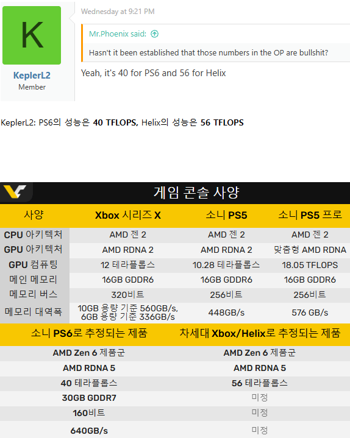

ai기기도 아니고 게임기에 뭔 메모리 대역폭까지 나와
플스2 때부터 대역폭 엄청 따졌었엉
병목도 있고 쟤들은 일반 PC처럼 메모리가 따로 있는게 아니라 통합이라…
이제 슬슬 4K 이상 영역으로 가는 중이라 주고 받는게 빨라야 로딩도 빨라지고 그러긴 함
중요함.
플스5가 괜히 입출력에 전용 프로세서까지 넣고 그러는게 아님
진짜 모르는구나
가격은 얼마일까 200?
최소 200 이지 ㅋ
싯팔 저번주에 ps5 pro 샀는데
축하합니다 그타6를 더 재밌게 하시겠군요
둘다 28년 쯤에 나올 거 같다고 하니 ㄱㅊ 요즘 부품 구하기 힘들어서 더 밀어질 수도 잇고
엥…. 계속 품절이던데 어떻게 샀음 ㅠㅠ
진짜 메모리 30기가면 저것만하더라도 가격이 한 2배는 뛰겠는데??
연산은 9070 , 9070xt 급 메모리는 5090급 처박았는데 400 이상 가려고?
저러면 가격 300은 잡아야 할거 같은데
Psp다시 안내주나
Psp로 몬헌이 진짜 재밌었는데
그 PSP가 200만원넘으면 몬헌 할 생각이 사라질꺼임
닌텐도에서 이번 몬헌 이식성공했다니 닌텐도로 오셈
답은 '스위치2'다
내년엔 절대 안나오겠지?
gddr 30기가면 넉넉하네
게임용 콘솔이 200만원 넘으면 많이 보급되기 어려울텐데.
콘솔 200 넘을때 스팀용 pc 가격도 빡세면 가능성 있을지도?
솔직히 저성능에 200이면 그냥 부품만으로도 이득임
나라면 바로 뜯어서 dgx스파크 대용으로 돌림
200 정도면 질러주는데 그렇게는 안나오겠지
소니보다 돈을 더 많이 주는 ai도 아직 젠6 시피유를 못 받았는데 먼 젠6여?
당장 젠5 8060s 단게 300만원인데?
그냥 병신새끼가 줫도 모르고 개소리 하는 거임
계약을 미리 한거 아닐까?
젠5도 가격이 인상해서 콘솔로 하면 뒷감당이 안되는데
2나노 최신공정 물량이 적은걸 소니가 ai 싸다구 치는 재력으로 계약을 미리 한다는건 불가능함
잘해야 젠5세대 시피유 개조 버전정도지
이 정도만 해도 지금 플스5 성능 2배니 중분하고
엑박아 맨날 하드웨어 성능만 조으면 뭐하냐 플스에 비해 게임이 제대로 안나오는데
당장 게임 사업부도 분사 시켜서 마소에서 내보낼려고 하는거 같던데
플스의 최신게임들을 아는사람 : ㄱ-
이거 200으로 나오면 통합 메모리 장비라 로컬 ai 장비로 다 잡혀갈듯...
언제 나올까
30GB면 게임안돌릴때 로컬AI머신으로 굴려도 될정도겠네
지금 엔비디아 6000번대도 28년가야 나온다 만다 하는데
고작 게임기 따위가 27년 11월 약속이 가능할까
애플도 가격 예상 로드맵 수정하고 있는데
요즘 병신들이 지들 뇌피셜 희망사항을 루머로 레딧에 막 뿌리고 다님
다른 취미생활을 찾아보자.
예전에 자체적으로 만들던 CELL-Broadband 프로세서 잘처만들것이지 ㅠㅠ
루머니까 너무 믿지마
다만 저렇게 나오면 한 200 넘더라도 바로 AI용으로 다 잡혀 갈거야
gts6 pc판은 ps6판이랑 같이 나오겠지? 그럼 저 사양에 맞춰서 나오려나
저렇게 나올정도면 ai부품 가격정상화 되어야 가능한거 아님?
아니면 플스 가격이 하늘을 뚫던가
Amd 주식 사야게찌..?
디스크도 없어진다고 하고 소니새끼들 장난질 하는거에 신뢰도 안들고 난 지금 쓰는 5프로가 마지막 소니콘솔일 것 같다
엑스박스는 성능이 좋다 이거 의미없음 윈도우 동시발매 이후로 단독타이틀도 없어서 살 이유도 없음 ㅋㅋㅋ 나도 엑시엑 겜패로 깔짝하고 겜패 전환율 구려지고 안킨지 2년도 넘은듯
helix 루머대로 스팀겜 되면 진짜 좋을듯
와우포에버도 엑박으로 출시할거같다고...
와우가 콘솔에서 되는 숙원이 드디어
응 디스크는 없어~